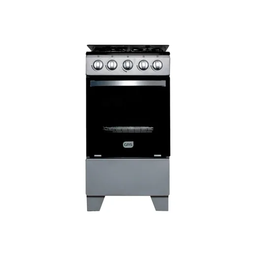

GRS · Modelo 20GE2S
Estufa de gas GRS 20GE2S 4 quemadores
L 4,290
En Walmart
Precio en cada tienda
| Tienda | Precio | Antes | Disponibilidad | |
|---|---|---|---|---|
| Walmart | L 4,290 | — | Disponible | Ver en tienda › |
Precios referenciales tomados de cada tienda el 28 de noviembre de 2026. El precio válido es el que muestra la tienda al comprar.
Historial de precio
Lo seguimos desde el 1 de noviembre. Precio más bajo registrado: L 4,290 en Walmart (1 de noviembre), igual que hoy. El precio no ha cambiado en ese tiempo.
Características
| Color | Plateado |
|---|---|
| Marca | GRS |
| Medida de altura | 1.02 m |
| Medida de ancho | 50 cm |
| Medida de peso | 28 kg aproximadamente |
| Medida de profundidad | 60 cm |
| Modelo o serie del producto | 20GE2S |
| País de Origen - Ensamblaje | México |
| Acabado | Brillante |
| Material | Acero esmaltado |
| Uso recomendado | Ideal para cocinas pequeñas |
| Voltaje | 120 V |
| Watts de potencia | 1000 W |
Descripción
Disfruta de la Estufa de gas GRS 20GE2S de 4 quemadores en color plata, un equipo de 20 pulgadas ideal para cualquier cocina moderna del hogar. Cuenta con quemadores potentes y una distribución uniforme del calor que ayuda a cocinar de forma pareja distintos tipos de alimentos durante el día a día. Su tamaño compacto resulta perfecto para uso doméstico, adaptándose bien a cocinas pequeñas o medianas sin sacrificar funcionalidad. Es una opción pensada para quienes buscan un equipo confiable para preparar desayunos, almuerzos y cenas familiares sin complicaciones adicionales. Su acabado en color plata aporta un estilo moderno que combina con distintos ambientes de cocina.